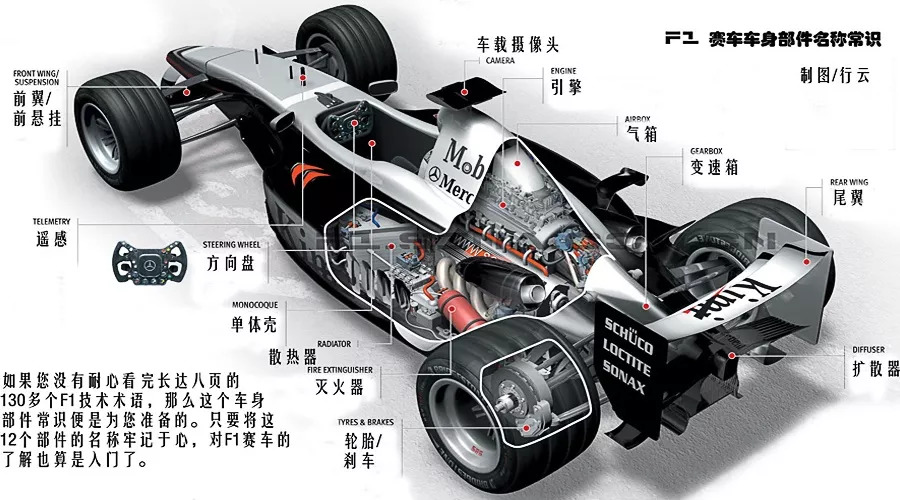

赛车简介
F1赛车要求车身重量轻、发动机马力扭矩输出大，减震性能优良
所以在外观上取消了与比赛无关的信号系统和照明系统，只保留了点火系统
而且发动机转子会做到尽可能小，以减小磁电机的惯性力，有利于发动机输出大马力、增强油门反应的灵敏度
另外，由于赛车的离地间隙大、减震行程长
所以赛车的座高一般都在91厘米以上，新款的赛车座高都在1米左右
发动机
现在的F1使用四冲程1.6升涡轮增压V6型引擎
气缸采用90度V型夹角配置
转速约为15,000转每分钟
意味着F1赛车可以在大约2.6秒内以加速到100公里每小时的速度
方向盘
F1赛车的方向盘比起一般汽车的方向盘要来得小
除了可以方便的转向、不离方向盘来换档等基本功能外
它更提供了对汽车内各部分的控制按钮
采用可拆卸式结构型式
使车手每次出入时都可将方向盘拆开，非常方便
轮胎
F1的轮胎叫做热融熔胎，通常由合成橡胶和碳纤维材料制成
作为F1赛车的“脚”，轮胎在比赛中的作用至关重要
F1轮胎的供应商也是比赛中的重要因素之一
目前，F1轮胎的主要供应商有倍耐力（Pirelli）、米其林（Michelin）和马牌（Continental）等知名品牌
2023年F1方程式大奖赛的轮胎供应商品牌则是倍耐力（Pirelli）
变速箱
F1赛车采用无缝隙变速箱
号称有快速换挡系统技术(quick-shift system)的全新变速箱
无缝隙换挡变速箱的换挡速度达到了0.008秒
其技术至今仍是F1中最大机密
尾翼
尾翼的主要作用是为赛车提供足够的下压力
从而增强赛车的抓地力
从2011赛季开始
F1引入了可调式尾翼（Drag Reduction System，简称DRS）
主要作用是降低赛车受到的阻力，从而提高赛车在直道上的速度
盘式刹车系统
它主要包括了刹车踏板、液压回路、刹车盘、卡钳和刹车片五部分
F1方程式所使用的单个刹车片质量仅仅为200克
但是它和刹车盘间的摩擦系数却在0.7以上
仅需4秒，速度为360km/h的赛车就可以停止下来